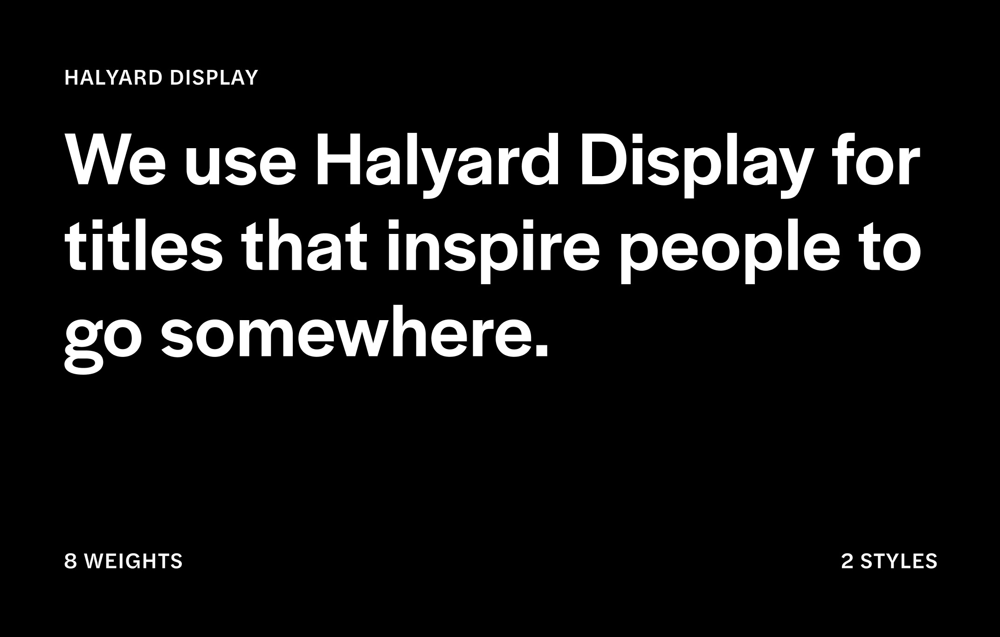
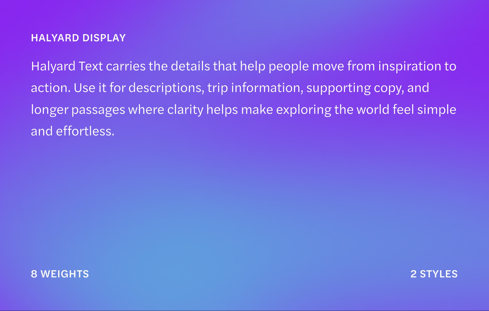
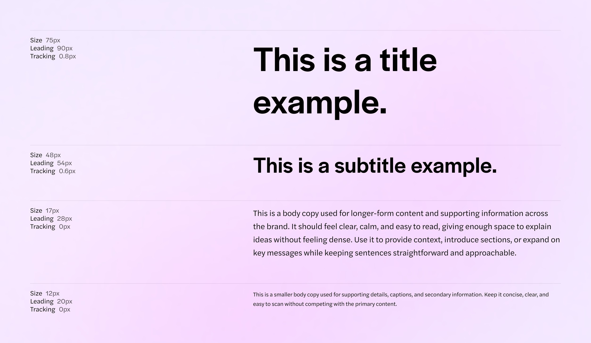
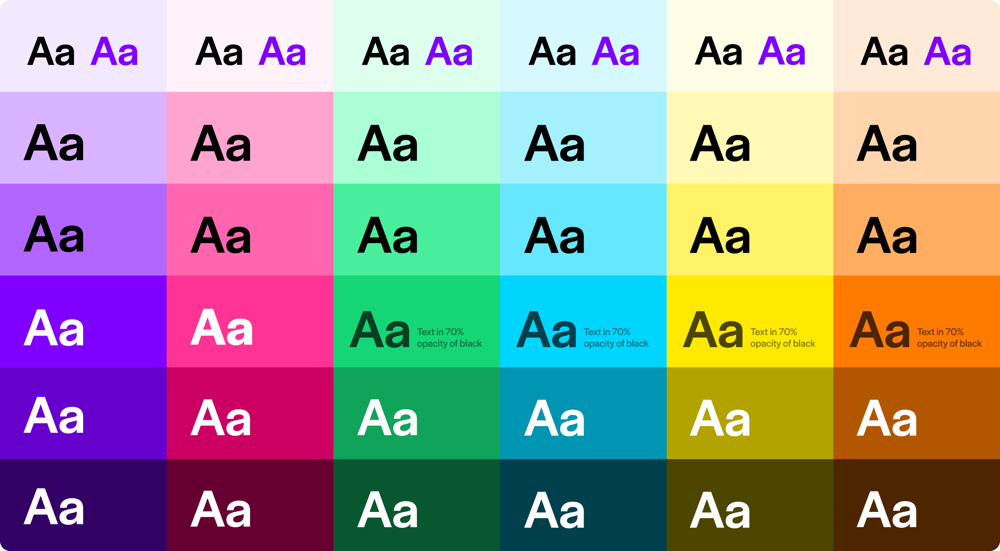
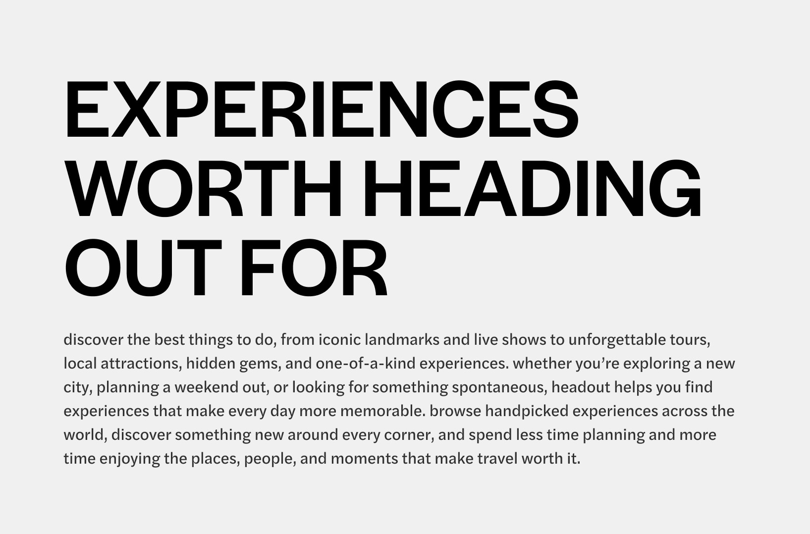
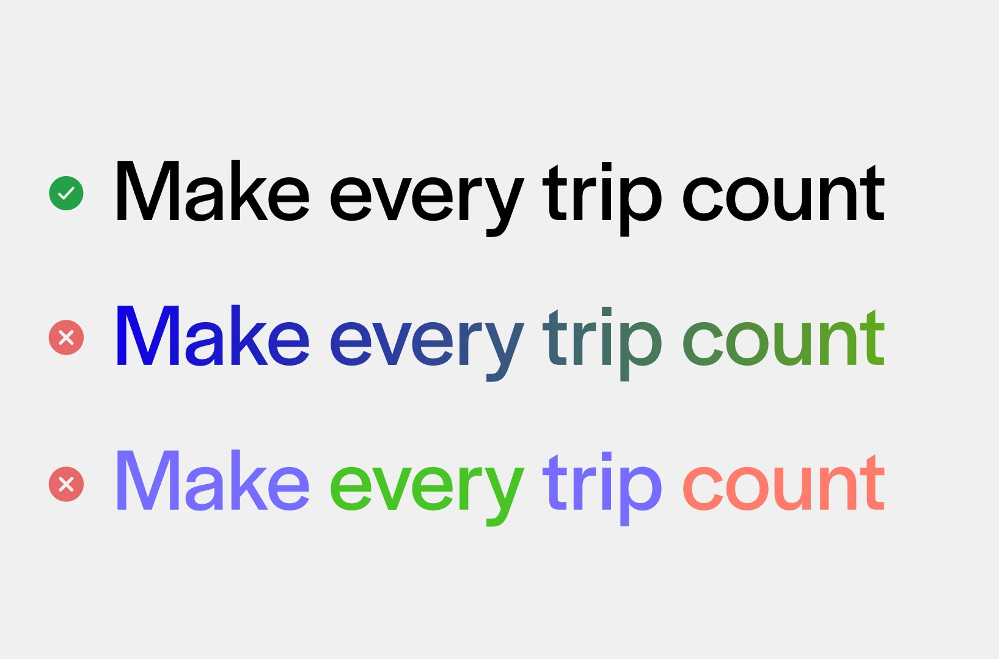
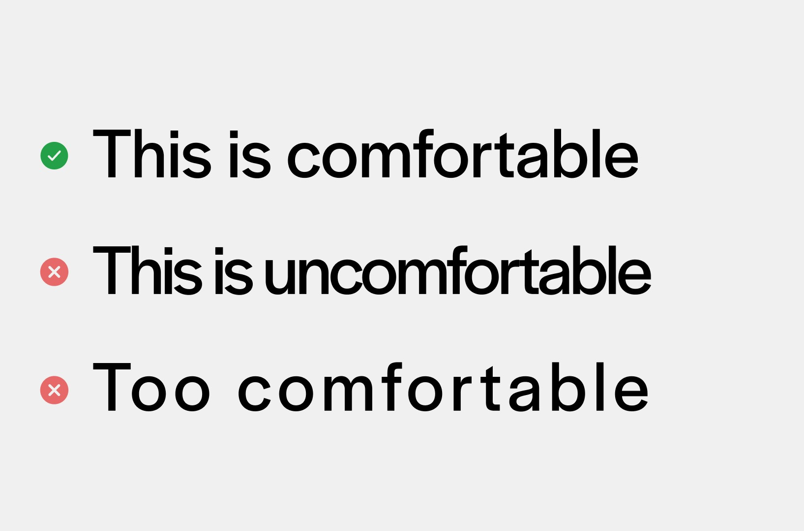
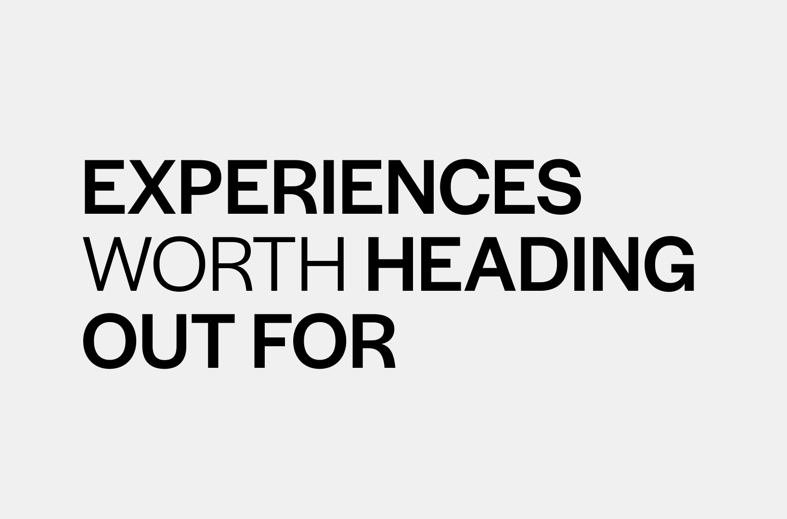
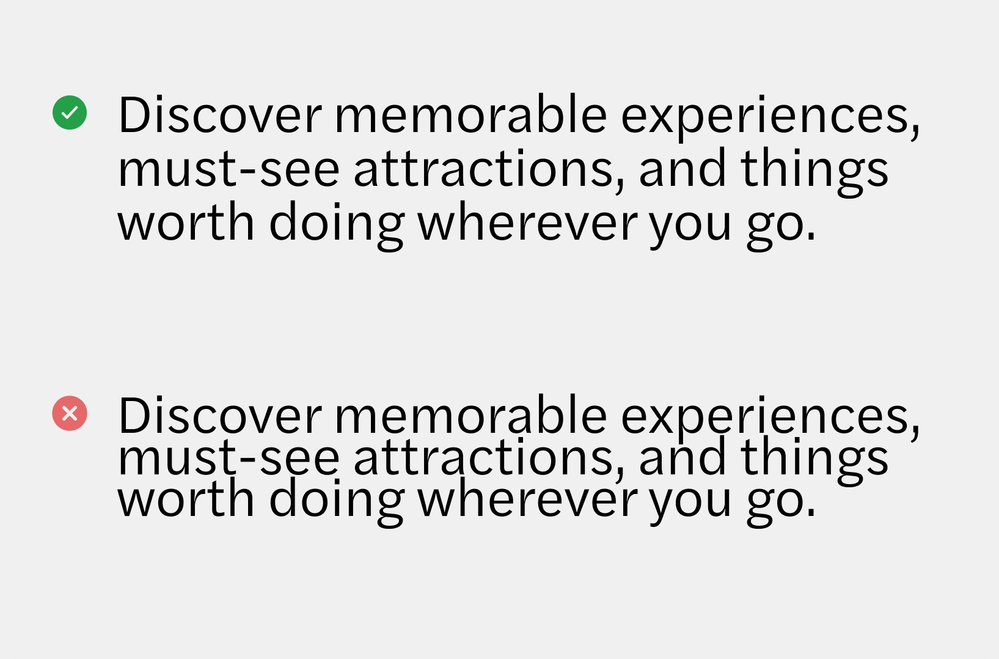
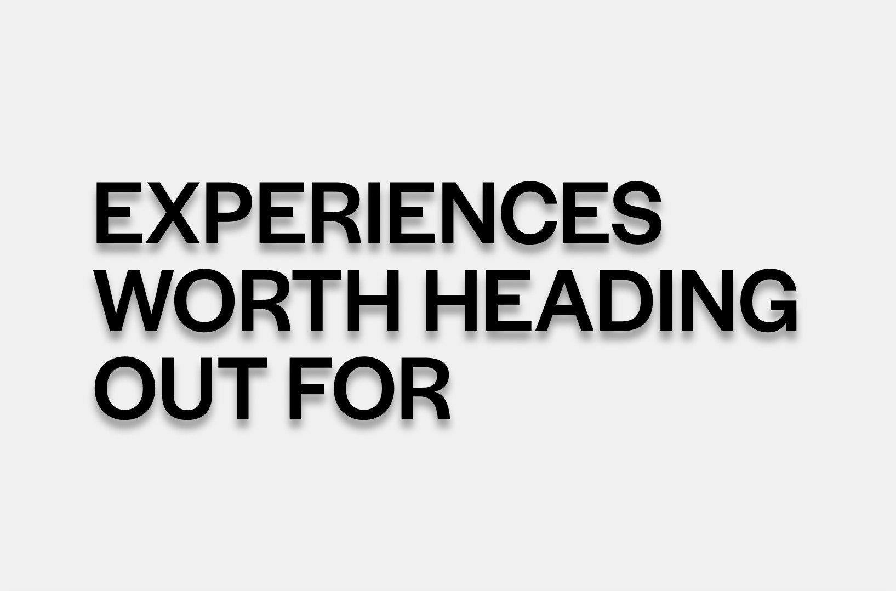

Typography
Typography helps us communicate with clarity and consistency across every product, campaign and customer touchpoint — a shared foundation, so every experience feels recognisably Headout.
Our typeface
Halyard is our voice in type. Halyard Display carries the big, confident moments — titles that inspire people to go somewhere. Halyard Text carries the details that move them from inspiration to action. Two styles, eight weights, one system.


Type setting
Leading, tracking and measure do the quiet work. Headlines sit tight so they read as one shape; body copy gets room to breathe. These are the settings we rely on for consistency and legibility.

Alignment
Left-aligned, ragged-right is our default — it reads fastest and keeps layouts calm. Centre alignment is reserved for short, symmetrical moments; we never justify or right-align running text.
Halyard Display is designed to create emphasis, not support long-form reading. Use it sparingly for moments that need visual impact; body copy stays in Halyard Text for clarity, comfort and readability.
Colour in typography
Text colour has to hold up on every shade. Drag the sliders to explore the palette and see which text colour stays legible.
Suggested combinations
Black type carries every tint and mid-tone; white type takes over on the deep shades. On the brightest hues — green, blue, yellow and orange — drop black to 70% opacity so it sits in the colour rather than on top of it.

Incorrect usage
Avoid altering Halyard in ways that affect clarity, consistency or readability. Keep casing, colour, spacing, weight, line height and effects aligned with the Headout type system.





